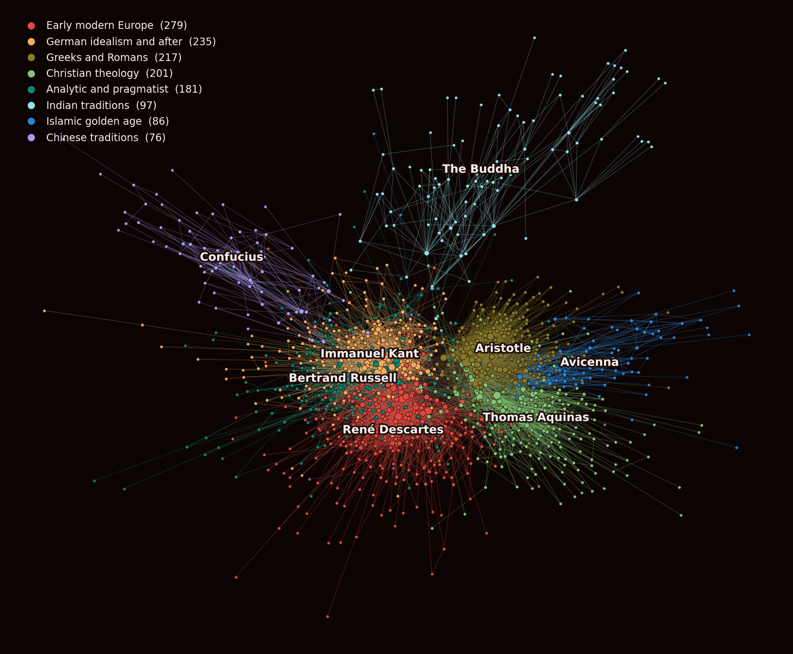
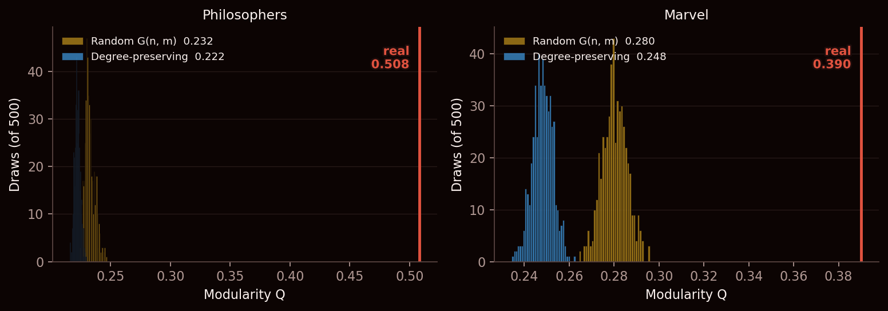
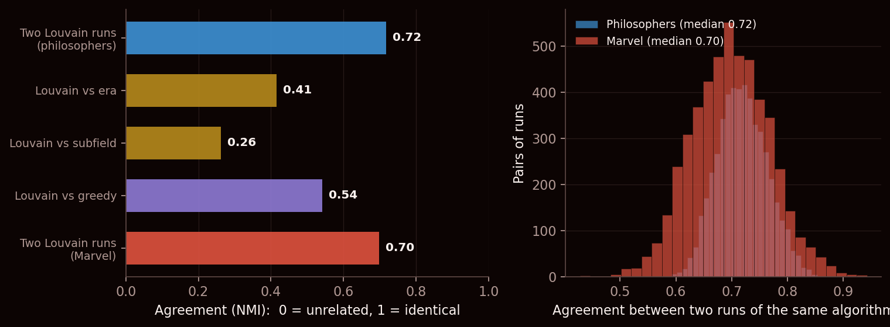
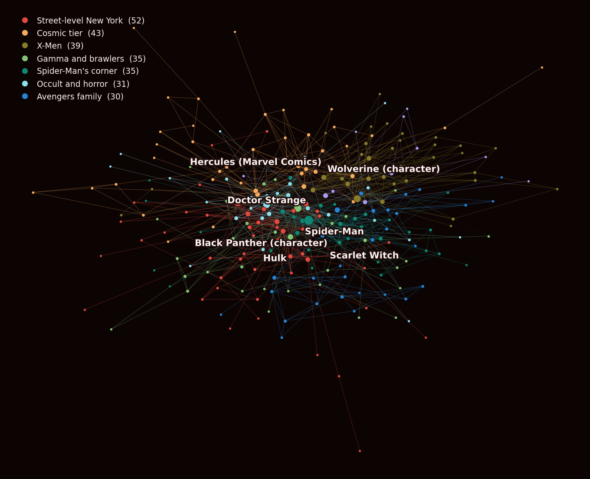

What we asked
Everything so far has been about the shape of a network as a whole. This week the question narrows: does the network fall into groups, and if it does, are they the right ones?
The first half of that is easy to answer and almost worthless on its own. Point any community-finding algorithm at any network and it will hand you groups. It will hand you groups if you feed it noise. So the interesting half is the second one, and it has an awkward problem: to know whether the groups are right, you need to already know the answer.
Which is why this post runs two networks side by side. One of them comes with an answer key.
Two networks, one with the answers in the back
The philosophers network is this week's shared dataset: 1,444 people with a Wikipedia article who were born before 1900, linked when one article links to the other. Crucially, Wikipedia already sorts them two ways that have nothing to do with links — each philosopher carries the century they were born in, and 322 of them also carry a subfield (logician, ethicist, metaphysician, and so on). That is our answer key.
The Marvel network is ours, the one the rest of this site is about: 303 characters, same link rule. It has no answer key at all. Nobody has labelled these characters by team in our data, and the whole point of the exercise is that we would like to know whether the algorithm can recover something like teams anyway.
So: calibrate on the philosophers, where we can mark the homework, and carry the calibration over to Marvel, where we cannot. Both networks get identical treatment — same algorithm, same number of runs, same null models, links counted once each regardless of how many times one article links to another.
Modularity, written Q, scores a proposed set of groups. It counts what fraction of the links fall inside a group, then subtracts what you would expect from the link counts alone. Put everybody in one big group and Q is exactly 0. A good split of a genuinely clustered network lands somewhere around 0.4 to 0.7. The trap, which this post spends a section on, is that a network with no groups in it whatsoever does not score 0.
What it found: traditions
We used Louvain, the standard fast method. It works by repeatedly moving each person into whichever neighbouring group improves the score most, then collapsing each group into a single point and doing it again. It is quick, it scales, and it is sensitive to the order it happens to consider people in — which matters later.
Run it on the philosophers and the best of our 100 attempts scores Q = 0.508, splitting 1,374 philosophers into 9 groups:

Nobody needs a statistician to see that this is not noise. The groups are the Greeks and Romans, Christian theology, the Islamic golden age, Indian traditions, Chinese traditions, early modern Europe, German idealism and the analytic tradition. That is a map of philosophy that a first-year undergraduate would recognise, drawn by something that has never read a word of any of it.
One caution before we go further, and it is the one the course makes a point of: those names are ours. The algorithm produced eight anonymous bags of philosophers plus a stray pair. We read the biggest members of each bag and wrote a label on it. The labels are a reading, not a result, and a different reader might carve them differently.
Is it real? Half the score is free
Q = 0.508 sounds good. The question we learned to ask two weeks ago is: compared to what?
So we rebuilt the network 500 times with the groups deliberately destroyed — once keeping every philosopher's exact number of links and shuffling who they connect to, and once dealing the links out completely at random — and ran the same algorithm on each. If a network with no communities in it still scores well, then a good score is not evidence of communities.

A shuffled philosophers network scores 0.222, and a completely random one 0.232. So of the 0.508 we measured, somewhere around 0.222 was going to happen whatever the data said. The real structure is the gap above that, and it is a big gap — no shuffle in 500 came close — but it is not the whole number, and quoting Q = 0.508 on its own would be quoting a number whose first 0.222 came for free.
Marvel tells the same story with less room to spare. It scores 0.390 against a shuffled 0.248. Genuine structure, comfortably outside anything the nulls produced, but a smaller real margin than the philosophers have.
Is it right? Not centuries, and not subjects
Now the part only the philosophers can answer. We have the algorithm's groups and we have Wikipedia's labels, so we can ask how much they agree.
The measure is NMI, which runs from 0 (the two ways of sorting people have nothing to do with each other) to 1 (they are the same sorting). Against the century each philosopher was born in, the algorithm scores 0.41. Against subfield, 0.26.
Both of those are low, and the low numbers are the finding. The communities are not centuries. The Greeks-and-Romans group spans the better part of a thousand years; the Islamic golden age group runs from the 1st-to-10th-century list into the 11th-to-14th; the German group is 18th and 19th century together. Nor are they subjects: the 51 philosophers Wikipedia files as logicians are spread across seven of the nine groups, and the 39 ethicists across seven as well.
What the link structure actually picks up is neither of those. It is who read whom — schools, lineages, traditions of citation and commentary. That cuts across time, because a tradition is precisely a thing that persists through time, and it cuts across subject, because a school argues about everything.
Would it say the same thing twice?
Louvain depends on the order it happens to consider people in, so a single run is a sample, not an answer. We ran it 100 times on each network with a different starting order each time.
The scores barely move: 0.485 to 0.508 across 100 runs of the philosophers. The groups move quite a lot more. Two runs agree with each other at a median NMI of 0.72 — and that number deserves to be sat with, because it is the ceiling on everything else in this post.
Which philosophers move? Not the ones you would guess. Among the 52 with fifty links or more there is no relationship between how connected someone is and how reliably they get placed — the correlation is 0.08. Aristotle, the most linked person in the whole network at 300, keeps the same company in only 42% of pairs of runs; Plato, at 218 links, manages 75%. The least settled of the well-connected are Galileo at 29%, Darwin at 30% and Spinoza at 36% — figures sitting on a seam between two traditions, who get filed on one side or the other depending on where the algorithm happened to start.
Copernicus is the one that stopped us. In the run we are showing he is filed with the Greeks and Romans, not with the early modern Europeans he was born among, and he only stays put 36% of the time. That is either a revealing fact about whose work his article actually connects to, or an artefact of a wobbly algorithm. We cannot tell which from the numbers alone, and that is rather the point of this section.

Read the figure top to bottom and the ranking is uncomfortable. The algorithm agrees with itself more than it agrees with any external truth we can check it against. It agrees with a different algorithm — greedy merging, which scores a worse 0.416 — at only 0.54. So when it disagrees with the century labels, part of that disagreement is a real finding about traditions, and part is just the algorithm being unable to make its own mind up. We cannot cleanly separate the two, and anyone who reports NMI against ground truth without reporting run-to-run NMI first is hiding that problem.
Marvel, with the calibration in hand
Now the network with no answer key. The best of 100 runs splits 277 characters into 8 groups at Q = 0.390, and two runs agree at a median of 0.70 — almost exactly the philosophers' figure. Whatever credit we extend to one, we owe the other.

And it works. There is an X-Men group, a Spider-Man group heavy on his own villains and supporting cast, a cosmic group, a street-level New York group, an occult group. The algorithm has recovered something close to Marvel's editorial line-up from nothing but who links to whom — which, given that the imprint is literally organised into teams and titles, is about what you would hope.
What we should not do is read the borders. At a run-to-run agreement of 0.70, a character sitting just inside one group in this run may well sit just inside another in the next. The sensible claim is "Marvel has roughly this many clusters and here is their rough shape", not "here is the roster".
Where the whole idea breaks: people in two places
Everything above forces every person into exactly one group. That is what a partition means, and it is obviously wrong for both networks. Aristotle belongs to the Greeks and to the scholastics who spent a thousand years arguing with him. Wolverine is an X-Man and an Avenger.
So we also ran clique percolation, which builds groups out of overlapping triangles and lets people belong to several — or to none. The trade-off is brutal and worth seeing laid out:
| Method | Groups | People placed | In more than one |
|---|---|---|---|
| Louvain (philosophers) | 9 | all 1,374 | 0, by construction |
| Triangles, k = 3 | 19 | 1,189 | 29 |
| k = 4 | 36 | 909 | 86 |
| k = 5 | 40 | 555 | 112 |
Tighten the definition of a group and it stops covering the network: at k = 5 it has an opinion about 555 of 1,374 philosophers and nothing to say about the rest. Loosen it and almost everyone is in, but the groups blur back together. Neither setting gives you what Louvain gives you, which is an answer for everybody — and Louvain buys that completeness by pretending nobody has two affiliations.
One more trap, briefly
Our data also says how many times each article links to each other article, so we could weight the links by that and score the same groups again. Doing so takes the philosophers from 0.508 to 0.558.
That looks like better structure and it is nothing of the kind. Weighted and unweighted Q are not the same measurement — the weighted version divides by total link weight instead of total link count, so the two are on different scales and the numbers cannot be compared. We report it here only because the higher number is exactly the sort of thing that gets quoted as progress.
Caveats
- The biggest one is the run-to-run agreement of 0.72. Every comparison in this post inherits it as a ceiling, including the ones we drew conclusions from.
- Our names for the groups are a reading of their largest members, not an output. We have not checked them against any philosophy reference, and a specialist would very likely quarrel with at least two.
- The subfield comparison uses the 322 philosophers of 1,374 who carry a subfield label — under a quarter of them, and not a random quarter. The NMI of 0.26 describes that subset, not the network.
- Louvain also produced one group of 2 on the philosophers. Small leftover groups are a normal by-product, and we have neither merged them away nor pretended they are traditions.
- Both networks are networks of articles. A link means an editor wrote one, which tracks how Wikipedia is written at least as much as it tracks intellectual history or comics continuity.
- Modularity has a known resolution limit: below a certain size it cannot see a group at all, and will fold it into a neighbour. Groups we report as absent may simply be too small for the method.
Reproduce it
Data: the week-4 releases, 1,444 philosophers and the 303-character Marvel roster with link weights. Everything above comes out of one script, and both networks go through the identical pipeline:
python analysis_week4.py # 500 null draws, 100 Louvain runs
python analysis_week4.py --fast # 60 and 25, for iterating
python analysis_week4.py --json # also dump every number to week4_numbers.jsonBuilt with NetworkX, scikit-learn, NumPy and Matplotlib. One implementation note worth passing on: NetworkX uses edge weights by default, and both of this week's releases ship weights. Our first run was quietly computing weighted modularity while we described it as unweighted, which would have made the two networks incomparable with each other and with everything we published in week 2. Every Q above passes weight=None explicitly.